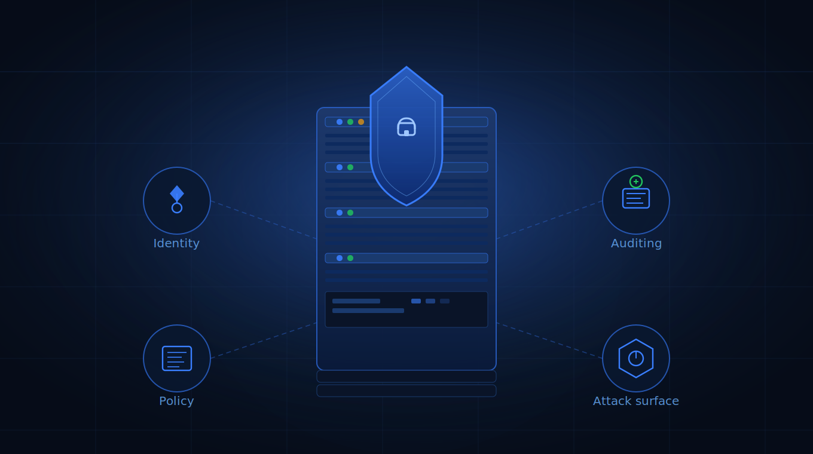
Active Directory – Blog Part IV: Security Hardening
Active Directory can be looked at differently between IT operations, Systems Administration, DevOps, Cybersecurity, and other technical disciplines. It is one of those systems that has historically shaped domain management on corporate networks, has continued to keep environments productive and running, and is a complex hierarchical system, identity gatekeeper, and an imperative system to not only properly maintain administratively, but securely as well.
An out-of-the-box installation of the AD DS (Active Directory Domain Services) server role on a given Windows Server operating system has a lot of set default configurations that leave open a handful of security loopholes.
These loopholes leave the door open for more achievable brute-force success, accounts with more privileges than needed, weaker password policies, greater potential for successful downgrade attacks, relay attacks, and basic recon through anonymous enumeration. There are also default Kerberos configurations that leave accounts exposed to Kerberoasting attacks, among other settings that increase the overall attack surface on a default setup.
This hands-on demonstration focuses on foundational hardening steps in a controlled environment. In production, additional controls such as SIEM integration, endpoint detection systems, privileged access workstations (PAWs), and identity protection measures would be layered on top.
In this write-up, I go through a layered security approach I put together right after installing the AD DS server role and promoting the Windows Server VM into a domain controller.
The layered approach is as follows:
1 – Identity and Access Hardening: Account Separation & Default Account Hardening
To start things off, I've created a separate administrative account to manage this domain controller with, instead of using the built-in Administrator account.

Below, the built-in Administrator account is right-clicked to access its options, then disabled. The confirmation dialog confirms the account has been successfully disabled.


Here I'm verifying that the Guest account is disabled. It usually is by default, and it is, as indicated by the "Enable account" option appearing when right-clicking on it.

Here, I have my separate administrative account as a member of the Built-in Domain Admins Global Security Group to be able to carry out administrative tasks with this account on the domain.

These protections help reduce the risk of credential theft from memory (such as LSASS - Local Security Authority Subsystem Service, or lsass.exe) and limit the exposure of privileged accounts during lateral movement attempts. Because of these restrictions, accounts in the Protected Users group should be used carefully, as certain legacy systems or authentication workflows may no longer function as expected.
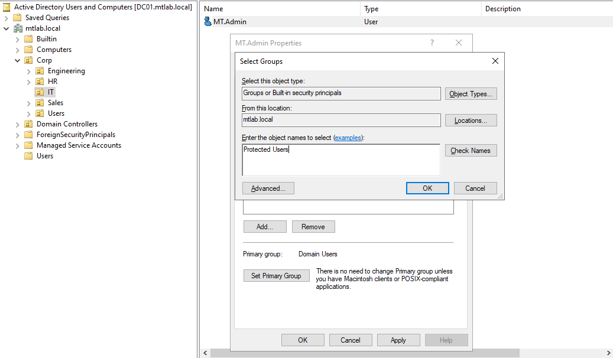
In this example, I have an OU called Corp with a child OU called Users for the standard user accounts on the domain. Here I'm creating a standard user account called MT.User to avoid using my MT.Admin account as a standard login account, configuring a general production account with the concept of least privilege.


2 – Password Policy Implementation
You can't go over AD Security Hardening without covering the implementation of a strong password policy for an AD deployment.
A domain-wide Password Policy can be set within the Group Policy Manager, under the Computer Configuration hierarchy of the Group Policy Management Editor.
Group Policy Management can be found under Server Manager > Tools:

Here in the Group Policy Management console, I'm going to expand the domain hierarchy down to Default Domain Policy.


To access the Group Policy Management Editor, right-click where it says Default Domain Policy, then select Edit.


In the Group Policy Management Editor, under Computer Configuration, I'm going to expand the hierarchical structure to:
Computer Configuration > Policies > Windows Settings > Security Settings > Account Policies > Password Policy


Here is where a password policy is specified domain-wide. There are a few different policies that can be applied and enforced for account passwords on the domain accounts.
In this example, I'm going to set the:
- Maximum password age – 42 days
- Minimum password length – 14 characters


Another thing that can be set under the Account Policies is the Account Lockout Policy.


I'm going to set the Account lockout threshold to 5 invalid logon attempts to lock out a given domain account.

I'll set the Account lockout duration and Reset account lockout counter after to 30 minutes.


Then I'll open an elevated PowerShell session to push out these new domain changes.

Below, I'm running the net accounts command for a quick verification step to confirm that the password and lockout policy changes pushed out by gpupdate /force are actively in effect on the domain controller. The output below reflects exactly what was configured.
- A Minimum password age of 1 day prevents user from immediately cycling through passwords to back to a previous one.
- The maximum password age of 42 days enforces regular password rotation across domain accounts.
- The Minimum password length of 14 characters ensures passwords meet a baseline complexity threshold.
- The password history of 24 means a user cannot reuse any of their last 24 passwords.
On the lockout side, the Lockout threshold of 5 confirms that an account will be locked after 5 consecutive failed login attempts. Both the Lockout duration and Lockout observation window are set to 30 minutes, meaning a locked account will automatically unlock after 30 minutes, and the failed attempt counter resets after 30 minutes of no failed attempts.
The Computer role: PRIMARY confirms this output is being read directly from the domain controller, meaning these are the domain-wide enforced values, not a local policy.
Many organizations are moving toward longer passphrases (often 14–15+ characters) with no periodic expiration, combined with additional security controls such as multi-factor authentication (MFA). This approach reduces user fatigue and predictable password changes, while increasing overall resistance to brute-force and credential-based attacks.
In practice, traditional rotation policies are still widely enforced due to legacy systems and compliance requirements, making it important to understand both models when designing or managing Active Directory environments.

To test out these configuration changes, I'm going to purposely lock out my MT.User account on my domain connected Windows 11 VM.


Both this Password Policy and Account Lockout Policy demonstrated apply domain-wide. Prior to Windows Server 2008, a domain could only have one single password policy defined in the Default Domain Policy. FGPP (Fine-Grained Password Policies) were then introduced as a feature in Active Directory to allow different password and account lockout policies to be applied to different sets of users within the same domain.
FGPP's design gets around this limitation by using two specific object types in the Active Directory schema:
- Password Settings Objects (PSOs): This is where the actual policy settings are defined, such as minimum password length, complexity requirements, lockout thresholds, and password history. Multiple PSOs can be created, each with different distinctive settings.
- Password Assignment: You can link a PSO to specific user accounts or Global Security Groups.
- Enforce "High-Security" PSOs for members of groups like Domain Admins or Enterprise Admins.
- Enforce "Standard User" PSOs for general staff.
- Enforce "Service-Account" PSOs (often with longer, randomized, non-expiring passwords) for automated processes.
Creating & Applying a Fine-Grained Password Policy (FGPP)
Creating a new Fine-Grained Password Policy using PowerShell by running the New-ADFineGrainedPasswordPolicy cmdlet.

In this example, I'm going to name this FGPP FGPP-DomainAdmins

It is also worth noting that when a PSO is applied directly to a user account object on the domain, it will always take precedence over any PSO applied to that user account object via group membership, regardless of the Precedence number that is assigned to each PSO. So in the case that a group linked PSO has a lower precedence number, a PSO tied directly to the user account will always win. Making the direct user assignment the strongest form of PSO application, and it's also something to be intentional about when designing your FGPP structure.
With all of that being said, there is one important exception to that rule. If multiple PSOs are applied directly to the same user account object, not through group membership but assigned directly, then direct assignment no longer automatically wins. In that scenario, AD falls back to the Precedence number to determine which PSO wins, with the lowest Precedence number taking the priority. This re-enforces why being deliberate and strategic about your Precedence numbering goes a long way, even when working with direct user assignments.
In this example, the Precedence is set to 1, giving this PSO the highest priority for any member of the Domain Admins group.


The PSO can be found in Active Directory Administrative Center, under [Domain Name] > System > Password Settings Container


FGPPs listing under DC01 (local) > System > Password Settings Container

Manually adding the FGPP-DomainAdmins PSO to the Domain Admins Global Security Group.


To further verify that the FGPP is being correctly applied to the Domain Admins Global Security Group, the Get-ADUserResultantPasswordPolicy cmdlet is run against the MT.Admin account. This cmdlet queries AD and returns the resultant PSO that is actively being applied to the specified user object.
The output confirms the FGPP is working as intended.
The AppliesTo field shows CN=Domain Admins, CN=Users
This confirms that the policy is linked to the Domain Admins Security Group.
The Name field confirms the correct PSO FGPP-DomainAdmins is being applied, and the Precedence value of 1 confirms it holds the highest priority.
The remaining fields reflect the exact policy settings configured earlier, validating that the PSO is active and enforced.

In many environments, administrative accounts are configured with more aggressive lockout controls, such as longer lockout durations or requiring manual administrator unlock, to reduce the risk of brute-force or password spraying attacks. Standard user accounts, on the other hand, may use more forgiving lockout settings to balance usability and security.
This separation ensures that high-value targets receive stronger protection without negatively impacting the day-to-day usability of standard user accounts.
3 – Group Policy Security Hardening
Within the Group Policy Management Editor, navigating to:
Computer Configuration > Policies > Windows Settings > Security Settings > Local Policies > Security Options

Network security: LAN Manager authentication level
This setting controls which authentication protocols the domain controller will accept for network logons. Configuring this to enforce NTLMv2 only while refusing LM and NTLMv1 eliminates the weakest authentication paths on the domain, directly reducing the risk of credential-based attacks such as downgrade attacks and pass-the-hash.


To verify the policy has been applied, I'm running the following PowerShell command directly against the registry before and after running gpupdate /force.
This command runs a query to the LSA (Local Security Authority) registry key directly, where Windows stores authentication and security policy settings, and filters the output down to just the LmCompatibilityLevel value.
In this example, the first run returns nothing, confirming that the policy has not landed and Windows is still falling back to its default negotiation behavior.
After the gpupdate /force command pushes the Group Policy change out, the second run returns 5, which is the registry value that maps directly to Send NTLMv2 response only. Refuse LM & NTLM. This confirms the setting has been written to the registry and is actively enforced on the domain controller, not just confiugured in Group Policy,but verified at the OS level where it actually takes effect.

This is one of the more impactful protocol-level hardening steps you can apply to a domain controller.
To understand why this matters, it helps to understand what these protocols are and how they differ. LM (LAN Manager) is the oldest of the three and is considered cryptographically broken. It splits passwords into two 7-character chunks and hashes them independently, making them easily crackable with modern hardware. Passwords shorter than 14 characters are null-byte padded before splitting, making the second chunk trivially crackable and immediately revealing to an attacker that the password was seven characters or fewer. NTLM (NTLMv1) improved on LM but still relies on a weak challenge-response mechanism that is vulnerable to pass-the-hash attacks, where an attacker captures a hashed credential from memory or network traffic and uses it directly to authenticate without ever needing to crack the underlying password. NTLMv2 addressed many of these weaknesses by incorporating a client-side timestamp and a more complex HMAC-MD5 based challenge-response that incorporates a client nonce and timestamp alongside the user's NT hash, making captured hashes significantly harder to replay or crack offline.
Beyond downgrade attacks, even NTLMv2 still carries inherent risk in Windows environments through NTLM relay attacks. In a relay attack, an attacker on the network intercepts an NTLM authentication attempt from a victim machine and forwards it in real time to a different target server, effectively authenticating as that user without ever touching the password hash. Tools like Responder and ntlmrelayx have made this class of attack highly accessible. While refusing LM and NTLMv1 via this policy setting removes the weakest authentication paths entirely. Modern environments aim to reduce NTLM usage as much as possible in favor of Kerberos, though eliminating it entirely remains a challenge in most real-world deployments.
Enforcing NTLMv2-only at the domain controller level ensures that no client on the domain can negotiate a weaker authentication protocol, closing off a class of attacks that have been a staple of Active Directory penetration testing and real-world breaches for decades.
Microsoft network client: Digitally sign communications (always)
This setting is associated wtih SMB signing, a direct countermeasure to mitigate against SMB relay attacks. Enabling this policy cryptographically validates that packets haven't been tampered with in transition between the domain controller and network connected client hosts.


Running Get-SmbServerConfiguration and filtering for EnableSecuritySignature and RequireSecuritySignature provides a ground-truth confirmation of the SMB signing state directly from the OS.
The output returns EnableSecuritySignature = False and RequireSecuritySignature = True. These are two distinct settings, RequireSecuritySignature = True is the confirmation that matters here.
This tells us that SMB signing is now mandatory on this server, meaning any connection that doesn't support signing will be outright rejected. EnableSecuritySignature controls whether signing is offered as optional for connections that don't require it, with RequireSecuritySignature already set to True, that flag is redundant. The False value next to EnableSecuritySignature is expected and correct, not a misconfiguration.

Kerberos Security Hardening
LM and NTLMv1 are legacy protocols that have been deprecated, with the development of NTLMv2. However, NTLMv2 is still NTLM, and NTLM is still a challenge-response protocol with well-documented weaknesses.
Kerberos has been the default authentication protocol in Active Directory since Windows 2000, and the overall architecture of the protocol's design is fundamentally different from NTLM.
Unlike the NTLM design, Kerberos doesn't operate by passing credential material across the network, but uses a cryptographic ticketing system.
In this design, when a user authenticates against a domain, the KDC (Key Distribution Center) running on the domain controller issues a TGT - Ticket Granting Ticket. That TGT is then used to request service tickets for specific resources. The user's credentials never travel across the network again after that initial exchange. It's this design that mitigates against relay attacks that make the NTLM design a liability in the first place.
With all of that being said, a default AD DS installation does leave a few Kerberos-specific weaknesses on the table that are indeed worth locking down in a clean installation of Active Directory.
The Policy that is tied to this is the Network security: Configure encryption types allowed for Kerberos, located in the Group Policy Management Editor, under Computer Configuration > Policies > Windows Settings > Security Settings > Local Policies > Security Options
Here, I'm going to configure the policy like so:
Disable- DES_CBC_CRC
- DES_CBC_MD5
- RC4_HMAC_MD5
Enable
- AES128_HMAC_SHA1
- AES256_HMAC_SHA1
- Future encryption types
Without this policy defined, the domain controller will issue RC4-encrypted Kerberos tickets to anything that asks for one. By explicitly enabling only AES-128, AES-256, and Future encryption types.
This makes the activity of performing offline cracking in Kerberoasting attacks a lot more costly. The policy enforcing AES-only encryption makes it where any captured cryptographic ticket must be cracked against that AES encryption. Given how strong AES encryption algorithms are, this makes things a bit more computationally expensive. The default RC4-encrypted service tickets are a lot faster to crack in offline cracking.
That said, the AES enforcement does not completely prevent Kerberoasting. A captured AES ticket can still be cracked in a scenario that it's tied to a service account with an easy to guess password.
This is exactly why the FGPP service account PSO configured in section 2 matters here.
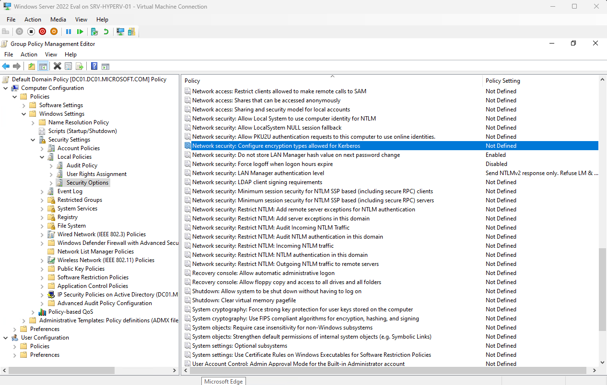
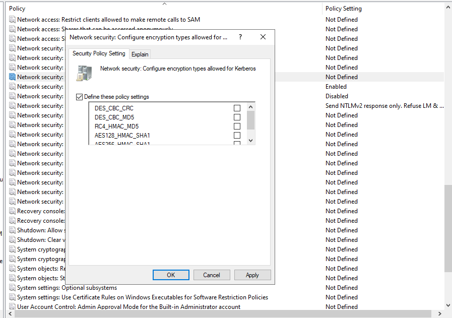
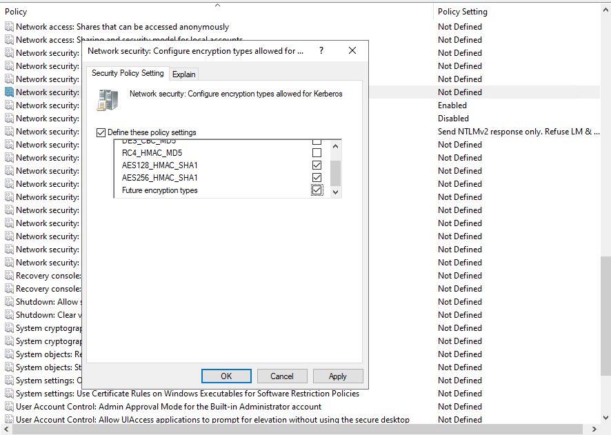
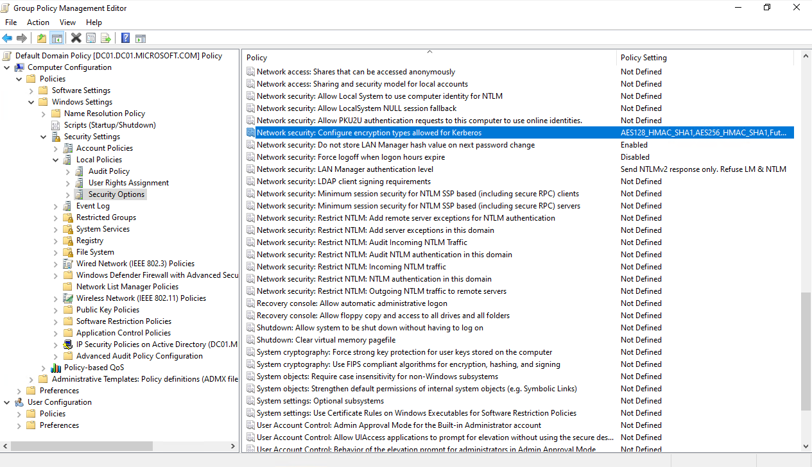
Network access: Do not allow anonymous enumeration of SAM accounts
Enabling this policy disallows anonymous enumeration making it really difficult to use tools such as enum4linux, smbclient, or rpcclient to enumerate server detail information. This significantly reduces unauthenticated enumeration, though authenticated enumeration and other attack paths may still exist.


Network access: Do not allow anonymous enumeration of SAM accounts and shares
By default, anonymous connections to a Windows system can enumerate both SAM account names and network share names if this policy is not explicitly enabled. By enabling this setting, it closes both of those doors simultaneously. Effectively mitigating against unauthenticated connections from retrieving a list of user accounts or discovering what shares are available on the domain controller.
Where the previous policy blocked SAM account enumeration alone, this one extends that restriction to shares as well, meaning an attacker performing anonymous reconnaissance has no path to pull either a user list or a map of available network resources without valid credentials.


Network access: Let Everyone permissions apply to anonymous users
By default, anonymous users are not members of the Everyone group in Windows, and this policy should stay that way. When this setting is enabled, it effectively grants anonymous connections membership in the Everyone group, meaning any resource on the domain controller that has Everyone permissions applied becomes accessible to unauthenticated connections, with no credentials required.
On a domain controller, that's a serious exposure. The Everyone group is broadly applied across many default Windows resources, and quietly extending that access to anonymous connections widens the attack surface significantly without any administrative visibility into who is accessing what.
This policy is disabled by default and is being verified here to confirm it remains that way. In a hardened AD environment, this setting should never be enabled.


Putting These Security Settings to the Test
To further test these security settings, I'm going to install the following tools on my Ubuntu server VM to carry out some active reconnaissance on the domain controller.
- enum4linux
- smbclient
- rpcclient
- nmap
Run Updates on Ubuntu Server VM
Before I install these tools I'm going to use the apt command Advanced Package Tool on the Linux Ubuntu server to run any available updates and upgrades beforehand. Then the same utility will be utilized to carry out the installation of these tools.
Running any available updates/upgrades on your Linux system prior to installing new software is a best practice as it synchronizes the system's local package index with remote reposityories and ensures that any newer software installations against the most stable, secure, and compatible version of existing system dependencies.


Install enum4linux
enum4linux is a Linux-based enumeration tool designed specifically for extracting information from Windows and Samba systems.
It automates the process of pulling user accounts, group memberships, share listings, password policy details, and OS information from a target, and it doesn't require credentials if the target allows anonymous access.


Install smbclient
smbclient is a command-line tool that allows Linux systems to interact with SMB/CIFS network shares on Windows machines.
In a reconnaissance context, it can be used to list available shares on a target host anonymously, giving an attacker visibility into what resources are exposed on the network without needing to authenticate.


Install rpcclient
rpcclient is a tool used to execute MS-RPC (Microsoft Remote Procedure Call) functions against a Windows target.
From a reconnaissance standpoint, it can be leveraged to enumerate domain users, groups, and other directory information directly over RPC, making it a useful tool for mapping out an Active Directory environment when anonymous RPC access is permitted.


Install nmap
nmap is one of the most widely used network scanning and reconnaissance tools in both penetration testing and defensive security.
Beyond basic port scanning, nmap's scripting engine (NSE) includes scripts specifically designed to enumerate SMB shares, users, and vulnerability information from Windows hosts, making it effective at probing the attack surface of a domain controller from the network level.

Verification of Installation

Attempting Active Recon on the Domain Controller
enum4linux

Based on this output, the enum4linux tool attempted every enumeration method it has. Groups, group memberships, local groups, domain groups, users via RID cycling, printer info, and no results retrieved with access denied across the board.
In this active recon example, the tool was about to reach the DC but could not retrieve anything meaningful with these hardening settings in place.

smbclient
Here, we have an output that says "Anonymous login successful", indicating the anonymous session was initiated at the protocol level, but it could not retrieve anything useful because SMB1 is disabled on the domain controller. This mitigates the legacy workgroup browsing mechanism that smbclient relies on for share enumeration.

rpcclient

Similar to the smbclient result, the session technically opened but hit a wall the moment it tried to do something useful.
The anonymous enumeration restrictions put in place are blocking the RPC calls that would return meaning directory information.
An attacker in this position has an open RPC session they can't actually do anything with, no user list, no group info, nothing to build on.
This output below indicates that anonymous (null session) access is restricted, mitigating against unauthenticated enumeration of domain information through RPC.

nmap
The nmap scan was run using the smb-enum-users and smb-enum-shares scripts targeting port 445 on the domain controller. The result came back reporting the host as seemingly down, but this isn't entirely accurate. What's actually happening here is that nmap sends an ICMP ping probe by default to verify a host is reachable before proceeding with any script execution. The Windows Firewall configured on the domain controller is blocking those ICMP probes, causing nmap to interpret the silence as the host being offline and abandoning the scan before the SMB enumeration scripts ever get a chance to run.
nmap itself acknowledges this in the output with the note: "If it is really up, but blocking our ping probes, try -Pn", the -Pn flag tells nmap to skip the ping check entirely and treat the host as up regardless. A more persistent attacker would likely follow that suggestion and rerun the scan with -Pn to force the enumeration attempt through. However, even in that scenario, the anonymous enumeration restrictions and SMB hardening already demonstrated through enum4linux, smbclient, and rpcclient would still be waiting at the next layer, meaning the firewall is simply the first line of defense that stops the attempt here before it even gets that far.


4 – Auditing & Visibility
Local Audit Policies vs. Advanced Audit Policy Configuration
Traditional Audit Policy (The "Legacy" Way)
Here under the Group Policy Management Editor, we have Local Policies > Audit Policy. These are the original auditing categories introduced in the early days of Windows NT.
The design is limited to an "all or nothing" approach. For example, if you enable the policy for "Audit object access," Windows logs every time a file is accessed, a registry key is touched, or a printer is used, causing the Security event logs to fill up instantly with thousands of useless log entries, making it extremely challenging to locate a legitimate security breach in the log data.

Advanced Audit Policy Configuration (The "Modern" Way)
These policies break those 9 legacy categories down into approximately 58 subcategories on Windows Server 2016 and later (the exact count can vary slightly depending on the Windows Server version, with earlier versions such as Server 2008 R2 exposing closer to 53), breaking things down further to enable more granular and explicit control of the policy settings. Instead of just auditing "Logon events" and recording everything with the legacy all-or-nothing approach, you can drill down into auditing things such as Account Lockout or Logoff.
This provides more of a precision approach, allowing you to track exactly what you need (like sensitive file changes) while ignoring what you don't (like system background processes), which saves disk space and CPU cycles.

Computer Configuration > Windows Settings > Security Settings > Local Policies > Security Options
Audit: Force audit policy subcategory settings (Windows Vista or later) to override audit policy category settings.
Why this matters:
Enabling this setting (which triggers the SCENoApplyLegacyAuditPolicy registry flag) is what actually "kills" the legacy policy. Without this specific toggle, simply configuring Advanced Audit settings won't guarantee the legacy policies are ignored, which can lead to inconsistent or "double" logging.
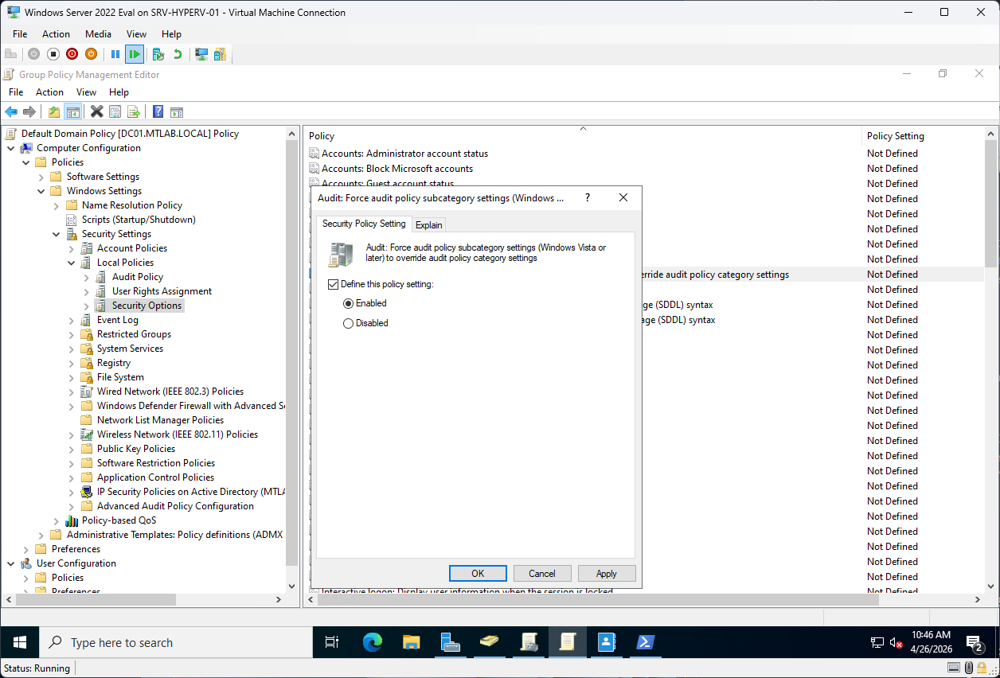
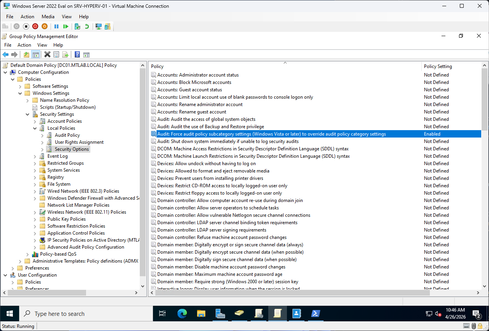
Account Logon
Under Advanced Audit Policy Configuration, navigating into Audit Policies and selecting Account Logon reveals the available subcategories for this audit category.
Account Logon events specifically track authentication activity processed by the domain controller, meaning every time a domain account is used to authenticate against the DC, whether successful or not, this is the category responsible for capturing that activity.
From the subcategories listed, I'm configuring Audit Kerberos Authentication Service to log Success events. Kerberos is the primary authentication protocol used in Active Directory environments, handling the ticket-granting process that underpins domain logons, service access, and inter-system authentication.
Auditing successful Kerberos authentication events gives visibility into who is authenticating against the domain controller and when, establishing a baseline of normal authentication behavior that makes anomalous activity, such as unusual logon times or unexpected account usage, easier to identify.


Account Management
Moving into the Account Management audit category, this section covers changes made to accounts and groups within the domain.
The subcategories here track things like user account creation and deletion, password changes, and group membership modifications, all of which are high-value events from a security monitoring standpoint, as unauthorized changes in any of these areas can be a strong indicator of privilege escalation or insider threat activity.
From the subcategories listed, I'm configuring Audit Security Group Management to log Success events. Security groups in Active Directory directly control access to resources and elevated privileges across the domain, so any time a security group is created, deleted, or has its membership modified, that event gets captured in the Security log.
This is particularly valuable for detecting unauthorized privilege escalation, such as a user account being quietly added to Domain Admins or another sensitive group outside of a normal change window.


Logon/Logoff
Moving into the Logon/Logoff audit category, this section tracks interactive and network-based logon activity directly on the domain controller.
The subcategory list here is notably broader than the previous categories, covering everything from account lockouts and group membership changes at logon time, to IPsec negotiations and special logon events. This granularity is what makes Advanced Audit Policy significantly more useful than the legacy approach, allowing specific logon-related events to be targeted without flooding the Security log with everything at once.
From the available subcategories, Audit Logon is configured to log Success events. This is one of the most foundational audit settings in any Active Directory environment, every successful interactive and network logon to the domain controller gets recorded, capturing the account name, logon type, source machine, and timestamp. This creates a reliable trail of who accessed the domain controller and how, which is invaluable both for routine access reviews and for incident response when tracing the movement of a compromised account.


Here, it shows the updated subcategory view after applying the configuration, confirming that Audit Logon, Audit Other Logon/Logoff Events, and Audit Special Logon are all now set to Success. The additional subcategories being captured here cover edge cases such as logons using cached credentials, logons with elevated tokens, and other logon types that wouldn't be captured by Audit Logon alone, rounding out visibility across the full logon/logoff activity spectrum on the domain controller.

Policy Change
Moving into the Policy Change audit category, this section tracks modifications made to audit and security policies on the domain controller itself. This is a particularly important category from a security monitoring perspective, if an attacker or malicious insider gains sufficient access to start modifying audit policies, being able to detect that activity is critical. An attacker who can quietly disable auditing effectively goes blind to the defenders monitoring the environment.
From the available subcategories, Audit Audit Policy Change is configured to log Success events. This subcategory specifically captures any changes made to the audit policy configuration itself, meaning if anyone modifies, disables, or reconfigures audit settings on the domain controller, that action gets recorded in the Security log. It's essentially the audit policy watching over itself, ensuring that any tampering with the logging configuration leaves a detectable footprint rather than silently disappearing.


Privilege Use
Moving into the Privilege Use audit category, this section tracks when accounts exercise user rights and privileges on the domain controller. Privilege use events are particularly relevant in an Active Directory security context because they capture the actual exercising of elevated rights, not just who has them, but when and how they're being used. This distinction matters because an attacker operating under a compromised privileged account will inevitably need to exercise those privileges to accomplish their objectives, and this category is what captures that activity.
The subcategory list here contains three options: Audit Non Sensitive Privilege Use, Audit Other Privilege Use Events, and Audit Sensitive Privilege Use. From these, Audit Non Sensitive Privilege Use is configured to log Success events. This subcategory captures the use of privileges that fall outside the most critical tier, things like bypassing traverse checking, changing system time, or shutting down the system. While individually these may seem minor, patterns of non-sensitive privilege use can surface unusual behavior that warrants closer inspection, particularly when activity is occurring outside of normal administrative hours or from unexpected accounts.


This confirms the configuration has been applied, with Audit Non Sensitive Privilege Use now showing Success in the Audit Events column, completing the Privilege Use category configuration alongside the other audit categories already put in place.

Verification
With all audit subcategories configured, auditpol /get /category:* is run to pull a complete readout of the current audit policy state directly from the system, providing a ground-truth verification of what is actually enforced at the OS level, independent of what the Group Policy Management Editor displays.
Across the two pages of output, the configured subcategories are confirmed exactly as intended. Under Logon/Logoff, Logon, Special Logon, and Other Logon/Logoff Events all show Success. Under Policy Change, Audit Policy Change shows Success. Under Account Management, Security Group Management and User Account Management both show Success. Under Account Logon, both Kerberos Authentication Service and Kerberos Service Ticket Operations show Success — confirming that Kerberos authentication activity is being captured at both the service and ticket level. Everything not explicitly configured shows No Auditing, which is exactly the precision the Advanced Audit Policy approach is designed to deliver, only logging what has been deliberately chosen, nothing more.
gpupdate /force is then run to ensure the Group Policy changes are fully pushed out and applied across the domain, confirming both Computer Policy and User Policy updated successfully.


Purposely Lock Out Account

Log Retrieval via PowerShell
Event ID 4625 – Invalid Logins
To retrieve failed logon events from the Security log, Get-WinEvent is run targeting the Security log and filtering specifically for Event ID 4625, the Windows event generated every time an account fails to authenticate. The -MaxEvents 10 parameter pulls the 10 most recent occurrences, and the output is piped through Select-Object and Format-Table to present the TimeCreated, ID, and Message fields in a clean readable format.
The results confirm the auditing is working exactly as intended. Ten Event ID 4625 entries are returned spanning across March 20th and 21st 2026, each logged with a precise timestamp and the message "An account failed to log on", these are the failed login attempts that were deliberately triggered earlier when locking out the MT.User account to test the account lockout policy. The fact that these events were captured and are now retrievable via PowerShell demonstrates the full chain working end to end, from the audit policy configuration, through the GPO enforcement, all the way to actionable log data being available for review and alerting.


Event ID 4740 – Account Lockouts
Following up on the failed logon events, the same Get-WinEvent query is run this time filtering for Event ID 4740, the specific Windows event generated when a user account is actually locked out. While Event ID 4625 captures each individual failed logon attempt, Event ID 4740 is the event that fires at the moment the lockout threshold is crossed and the account becomes locked, making it a more actionable alert from a security monitoring perspective.
The output returns two Event ID 4740 entries, both timestamped on March 21st 2026 — at 3:30 AM and 9:58 AM respectively, each logged with the message "A user account was locked out." These two lockout events correspond directly to the deliberate lockout tests carried out earlier in this write-up. The fact that only two events are returned also neatly illustrates the difference in volume between 4625 and 4740, ten failed logon attempts were captured across two days, but only two actual lockout events resulted, which is exactly how the account lockout threshold of 5 invalid attempts is designed to behave.

Event ID 4624 – Successful Logins
The query is now run filtering for Event ID 4624, the Windows event generated every time an account successfully authenticates and logs on. While Event ID 4625 captures failed attempts and 4740 captures lockouts, 4624 completes the picture by providing visibility into successful logon activity on the domain controller, which is just as important from a security monitoring standpoint. A pattern of successful logons at unusual times or from unexpected sources can be just as telling as a string of failures.
The output returns 10 Event ID 4624 entries, all timestamped on April 19th 2026 between 9:21 AM and 9:25 AM, each logged with the message "An account was successfully logged on." The cluster of successful logon events within this short timeframe reflects the active administrative session on the domain controller during this phase of the lab. The fact that these events are being captured and are readily queryable via PowerShell confirms that the Audit Logon subcategory configured earlier under the Logon/Logoff audit category is actively doing its job, very successful logon to the domain controller is being recorded, timestamped, and available for review.

Event ID 4728 – Adding Users to a Security-Enabled Global Group
Add Domain Admins to Users OU


Event Log Data
The final log query filters for Event ID 4728, the Windows event generated specifically when a member is added to a security-enabled global group. This is one of the more security-sensitive events in an Active Directory environment, as changes to global security group membership directly affect what resources and privileges accounts have access to across the domain.
The output returns 10 events spanning from March 19th through April 17th 2026, each logged with the message "A member was added to a security-enabled global group." These entries correspond to the various group membership changes carried out throughout this lab, including the nesting of the tier-specific security groups into their respective built-in domain groups, and the addition of MT.User to Domain Admins during the auditing test earlier in this section. The breadth of events returned here also reflects how active group membership management was throughout the build, with every single addition being captured and timestamped in the Security log, exactly the kind of accountability trail that matters in a production environment where unauthorized group membership changes are a key indicator of privilege escalation activity.
These logs become significantly more valuable when forwarded to a centralized logging platform such as a SIEM, where correlation and alerting can detect suspicious patterns in real-time.

In production environments, enforcing LDAP signing and channel binding helps mitigate these risks by requiring secure authentication over LDAP. While this behavior was not explicitly generated in this lab, it represents an additional layer of protocol-level hardening commonly implemented in enterprise environments.
5 – Attack Surface Reduction
To reduce the overall attack surface on the domain controller, I'm going to disable some unnecessary background services that a domain controller typically doesn't need to have running.
Stopping and Disabling Unnecessary Services
Print Spooler

Disabling this service as a best practice in a Windows domain environment was influenced by the PrintNightmare vulnerability (CVE-2021-1675 / CVE-2021-34527), a critical Windows Print Spooler vulnerability that enabled attackers to carry out remote code execution and local privilege escalation. Operationally on a domain controller, there is almost never a need to have this service enabled and running.
This aligns with the principale of reducing unnecessary services on Tier 0 systems.
- RemoteRegistry
- WerSvc
- Bthserv
- RemoteAccess

Securing Remote Desktop Connections
For RDP, Remote Desktop Protocol connections enabled for domain accounts that are members of the built-in domain-wide Remote Desktop Users security group, I'm going to purposely set that up only with my custom administrative domain account MT.Admin, and ensure standard user accounts such as MT.User are not configured with this security group.

With that in place, I'll try initiating a remote sign-in with the MT.User account. And upon attempting to connect, this message prompts as a result:

Local Domain Controller Windows Firewall
To first see if the local Windows Firewall is enabled, I'll run the Get-NetFirewallProfile cmdlet in a PowerShell session.

RDP Firewall Rule on the Domain Controller

Disable Remote Desktop Firewall Rule

6 – Tier Administration Model
The Tier Administration Model enforces strict administrative boundaries between different levels of the environment. The model is designed to isolate privilege and prevent credential exposure across trust boundaries.
The core principle is simple but critical:
accounts are restricted to operating only within their assigned tier and must never log on to systems outside of it.
This reduces the risk of credential theft, particularly from attacks such as Pass-the-Hash, where compromised credentials from a lower-tier system could otherwise be used to escalate privileges and move laterally across the network.
By enforcing this separation, the model helps to disrupt common attack paths that attackers rely on after gaining initial access.
- Tier 0 – Identity and control systems (e.g., DCs / AD)
- Tier 1 – Server infrastructure and business-critical services
- Tier 2 – End-user systems (workstations)
Tier 0 – Domain Controller
- Machine: Windows Domain Controller
- System: Windows Server 2022 Eval VM
- Account: MT.Admin
- Privileges: Elevated – Domain Admins


Administrative domain accounts log into domain controllers and authorized systems only.
This account does not log into any system that is outside of Tier 0.
In this example, MT.Admin is the designated account that logs directly and only into the domain controller for domain, identity & access, and Active Directory management tasks.
Tier 1 – Server
- Machine: Ubuntu File Server
- System: Ubuntu Server 24.04
- Account: mt
- Privileges: Standard user account with sudo privileges
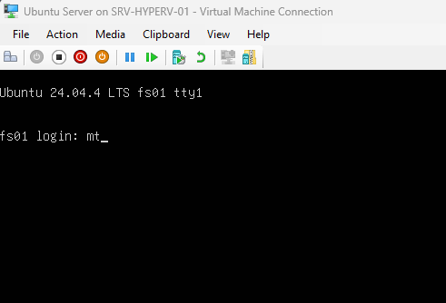
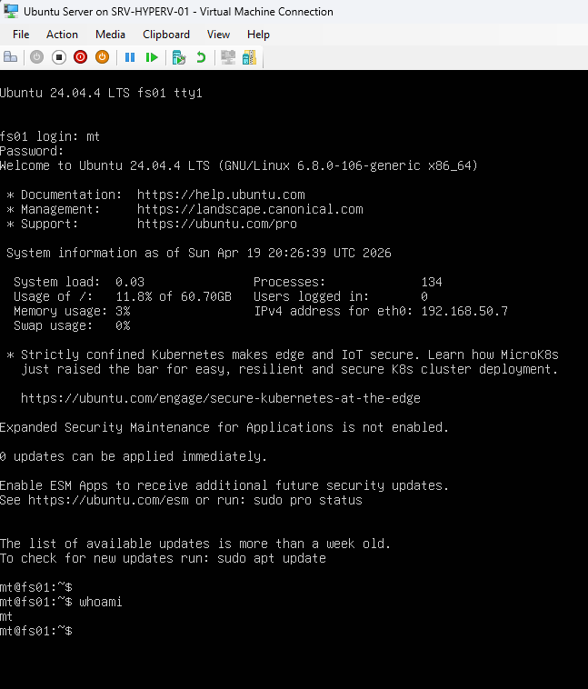
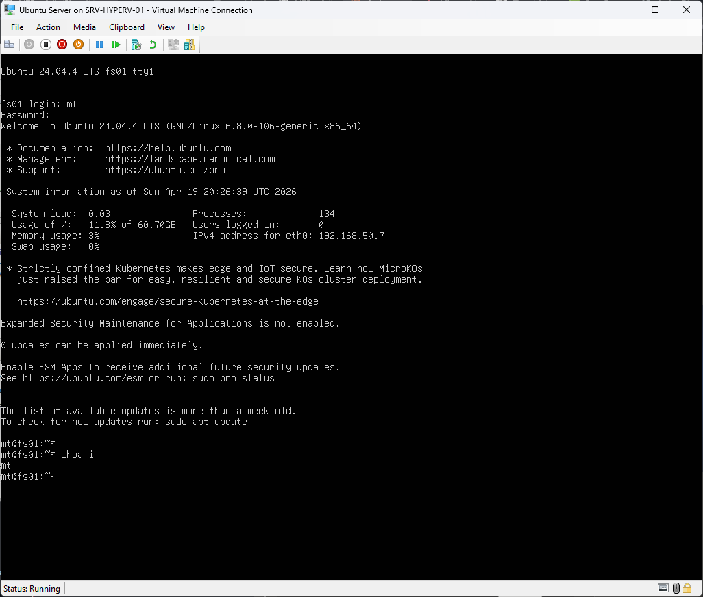
Tier 2 – Workstation
- Machine: Standard Windows 11 domain client host
- System: Windows 11 Pro
- Account: MT.User
- Privileges: Non-privileged standard user account


Standard domain user accounts with no administrative privileges log into standard domain-connected computers, everyday end user workstations.
For workstation administration tasks, using a local admin account is a best practice that goes a long way in preventing password hashes of administrative domain accounts from being left behind. The local admin account that isn't tied to the domain gets everything that is needed done. Modern setups extend this functionality further with the implementation and use of an RMM (Remote Monitoring & Management) tool for endpoint administration.
Global Security Groups
With the tier structure defined and the accounts in place, the next step is to build the organizational framework in Active Directory that supports and enforces that separation. To do that, I'm creating a dedicated Organizational Unit called Security Groups at the domain root level, keeping tier-specific groups logically separated from the default AD containers and making them easy to locate, manage, and audit.
Inside that OU, three Global Security Groups are created, one for each tier:
- SG-Tier0-Admins for privileged administrative accounts that manage domain controllers and core identity infrastructure
- SG-Tier1-Servers for accounts scoped to managing server-class systems
- SG-Tier2-Users for standard non-privileged domain user accounts
Rather than assigning accounts directly to built-in groups like Domain Admins or Domain Users, these tier-specific security groups act as the management layer, accounts get assigned to the appropriate tier group, and those groups get nested into the relevant built-in domain groups. This approach keeps the structure clean, scalable, and easier to audit as the environment grows.
Under the domain hierarchy in Active Directory Users and Computers, I'm going to create a new Organizational Unit – OU called Security Groups. In this OU, I'm going to create the following Global Security Groups:
- SG-Tier0-Admins
- SG-Tier1-Servers
- SG-Tier2-Users
Right-clicking the domain root, DC01.microsoft.com, to create a new Organizational Unit. By creating the Security Groups OU directly at the domain root level rather than nesting it inside an existing container like Corp, it stays logically separated from department-specific OUs and remains easily accessible for domain-wide group management.

The New Object - Organizational Unit dialog confirms the OU is being created directly under DC01.microsoft.com with the name Security Groups.


With the Security Groups OU created, right-clicking it to create the first of the three tier groups. Selecting New > Group opens the New Object - Group dialog, where SG-Tier0-Admins is created with a Group scope of Global and a Group type of Security. The Global scope ensures this group can be used to assign permissions across the entire domain, while the Security type is what allows it to be used for access control and group membership assignments, as opposed to a Distribution group which is used purely for email distribution lists.


With all three groups created, the Security Groups OU now contains SG-Tier0-Admins, SG-Tier1-Servers, and SG-Tier2-Users, all confirmed as Security Group - Global type. The tier structure is now represented as a clean, organized group framework within Active Directory, ready to have accounts assigned and then nested into their respective built-in domain groups.

Here, I'm going to attach my MT.Admin administrative domain account to the SG-Tier0-Admins Global Security Group to keep the elevated account logically separated.

From there, add the standard domain user account MT.User to SG-Tier2-Users.

Adding the Security Group SG-Tier0-Admins to the Built-in Domain Admins Security Group


Adding the Security Group SG-Tier2-Users to the Built-in Domain Users Security Group

Creating and Setting up MT.srv.mgmt with the Security Group SG-Tier1-Servers
Here I'm going to create a dedicated non-privileged domain account called MT.srv.mgmt for server administration in Tier 1. This account will login to servers in Tier 1 that provide services to standard workstations.
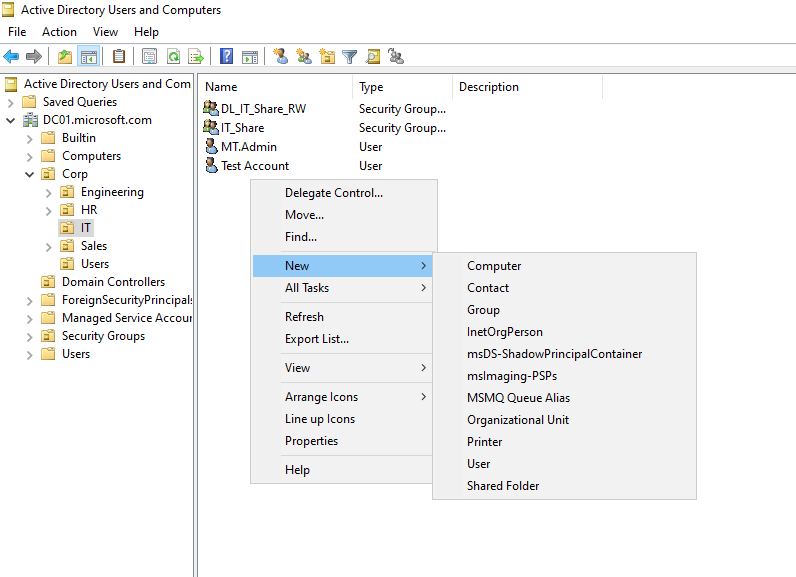
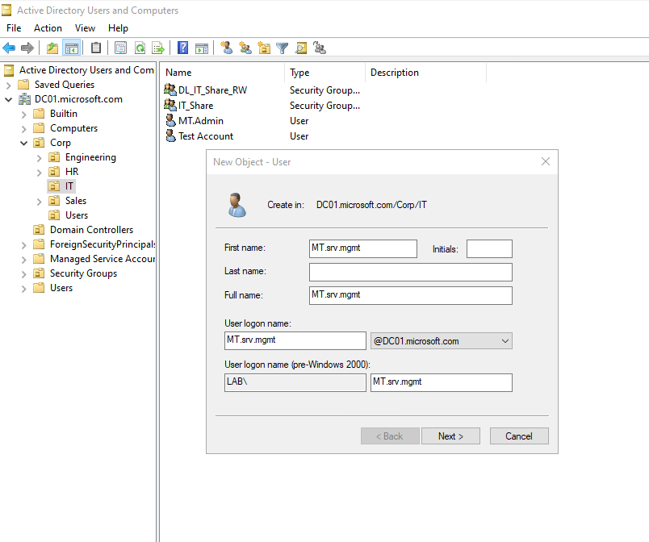
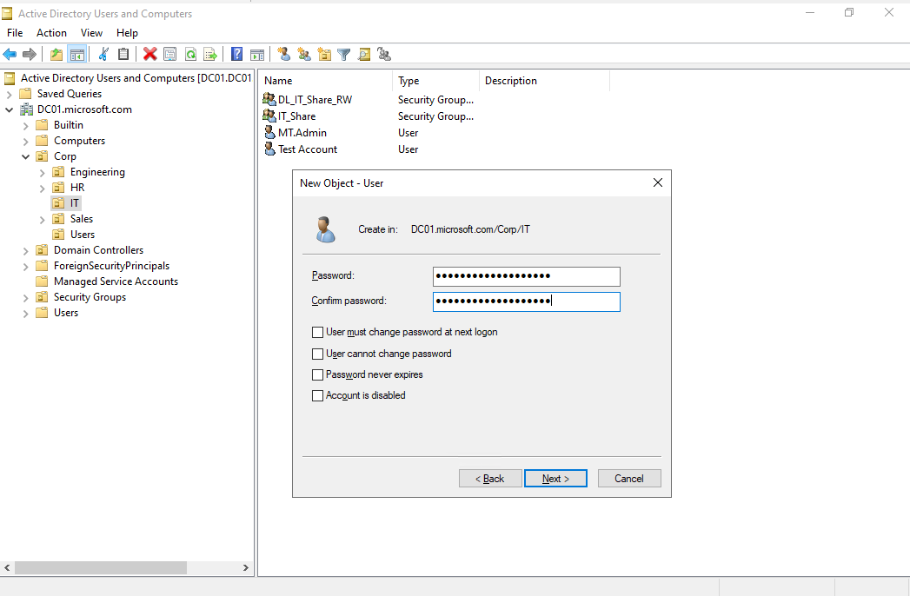
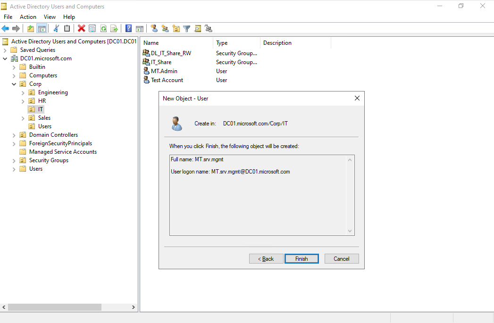
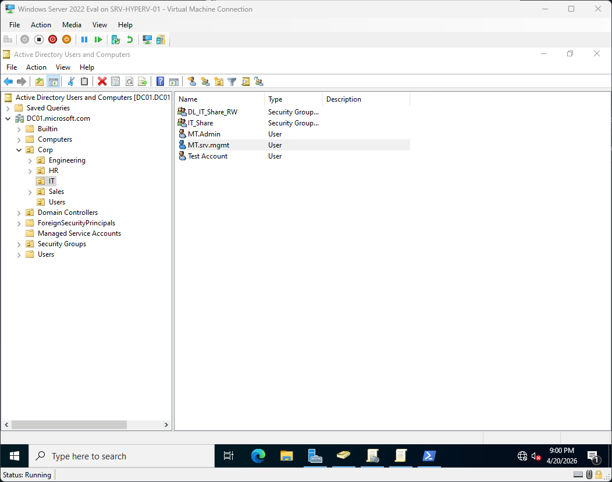
Adding the MT.srv.mgmt domain account to the SG-Tier1-Servers Security Group
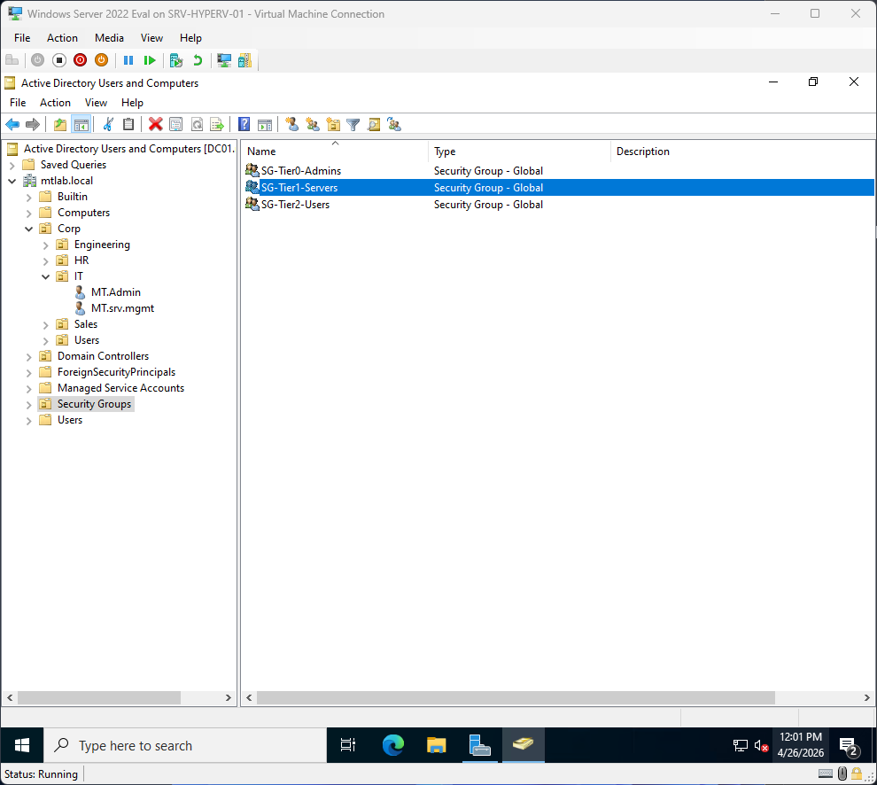
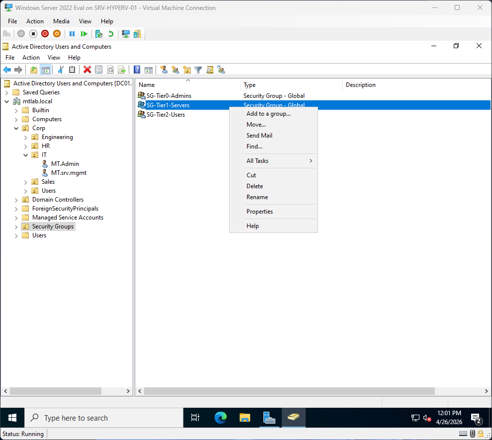
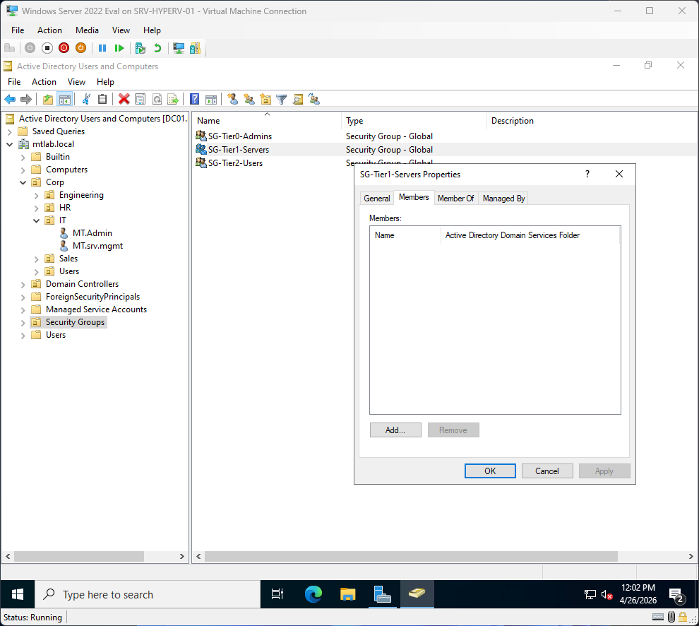
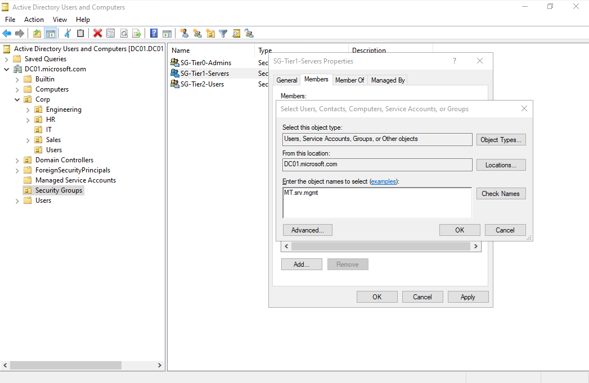
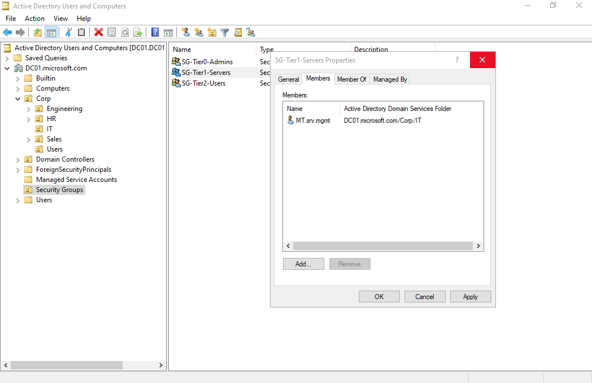
Active Directory is a trademark of Microsoft Corporation. This content is for educational purposes and is not affiliated with or endorsed by Microsoft.